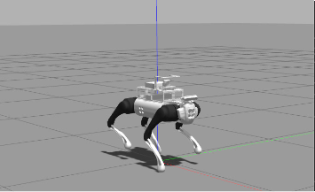
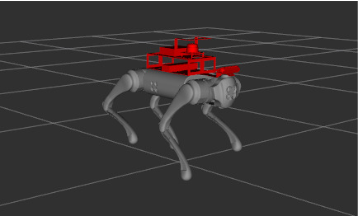

Projects
CIRL Go1 Quadruped Robot



This project is part of my thesis as well as my second research while I was a
research assistant in CIRL lab, Seoultech. In this research, we are focusing on
robust control method for imitation learning on quadruped robot. The method is
developed using Python and C++ in OCS2 framework and Gazebo simulation.
The robot that is used is based on a Unitree Go1 robot with additional bracket to
mount extra sensors (Lidar, Depth camera) and compute power (NVIDIA Jetson Orin NX).
The robustness of the imitation learning method in this research work is based on the
Hamiltonial loss for learning the policy. While most imitation learning method is focused
on the behavior cloning loss, in this work, we combine the Hamiltonian loss with the
behavior cloning loss to provide a smooth and robust imitation learning control policy,
achieving better results compared to using only Hamiltonian loss which resulted in robust
but aggressive movement and using only behavior cloning loss which resulted in smooth movement but not robust.
F1Tenth Autonomous Racecar


This project is related to my research topic while doing my masters in
Control and Intelligent Robotics Lab, Seoul National University of Science and Technology.
In this research, we are developing control method for an autonomous racecar. We have implemented
reactive, geometrical, and model predictive control method to the car. We also develop our own
simulation environment using Gazebo and ROS, and visualize our algorithm using RViz.
The workflow of our work consists of implementing the controller algorithm in Gazebo simulation
environment and visualize it in RViz. Once the car inside the simulation has achieved satisfactory
results in terms of safety and speed, we continue to implement it in the real robot.
The robot uses Hokuyo Lidar, IMU, and wheel encoder as the sensor, Jetson Orin NX as the main
computing board, and Traxxas chassis for the car body. Operating system that is used is Ubuntu 20.04
and ROS Noetic. Programming language used is C++ and Python.
Jetbot Mini Robot
This is the final project of a course that I took during my second semester of my master's degree.
The objective is to create a deep learning model to be implemented in the robot so that the robot
can follow the path. For this, I use a convolutional neural network as my model, and built and train
it using tensorflow. The datasets are taken based on a python script that I create so that I can just
move the robot in the track and the script will automatically take the images based on the keyboard
button press w,a,s,d. I assign 4 classes, which are forward, backward, left, and right. In the end,
I manage to get around 6000 image in total. Training is done in google collab, and inference is done
in the robot. Since the computer in the robot use Jetson Nano, which is not compatible with tensorflow,
I need to convert the tensorflow model to tensorflow lite model. In the end, the robot ables to follow
the track very reliably, and from this course, I learned that the most important aspect in training a
model is to provide a clean dataset so that the network can work reliably.
Mr. Robot
This is a personal project that I have done since the beginning of 2020. It acts like a
learning ground for me to satisfy my curiosity in creating a robot from scratch. Not only that,
it also allows me to apply the knowledge that I gain from the university to real life problems.
This robot is driven with 4 motors that is connected to a mechanum wheels. Those wheels are driven
by STM32 microcontroller which also monitor the wheel encoder of the motor. There are other
microcontrollers that is inside the robot, which are the Arduino pro micro and pro mini to drive
the LEDs, interacting with the LCD display, running the servo motor, reading the GPS sensor,
compass sensor, 6 DOF IMU sensor, thermal camera, and the input from a USB device such as a
USB keyboard for manual control of the robot. Those microcontrollers are connected throguh a
serial communication with each other so that all microcontrollers can exchange data. The brain of
the robot consists of 2 Single Board Computers (SBC), which are the RaspberryPi Zero ver.2 and Lattepanda.
These SBCs will work with the monocular camera attached to the servo motor as the main input of the robot
to sense the environment. Even though it is still far from finish, I hope that as time passes,
I can learn the robotic development process from the ground up and apply the knowledge that I get
later on when I work as a robotic engineer.
Projektarbeit QR-Code
During my first semester in Germany, I need to be a part of a project to complete my study.
For this, I applied to the project called Projektarbeit QR-Code (Project work QR-Code) and
got accepted. On this project, me and my one colleague were asked to develop a windows application
that is able to work with two functionalities, which are taking an excel file as an input that
consist of students data and output an answer sheets for each of the students in the form of
Microsoft word file and taking an image file of the scanned answer sheet and output an excel file
that consist of the students data from the scanned answer sheets. The way this work is that we create
a windows application that creates a QR code based on the student data and place it in the specified
location of the generated answer sheet. Since QR-Code is basically a medium to store a few number of
characters, we can use it as a medium to exchange data from digital world to physical world and vice versa.
When the answer sheet is to be read, the scanned answer sheet is then taken as input so that the
decoding of the QR code can be executed. By this, we have a system that is able to generate an answer
sheet for the students to fill in and read the answer sheet to know which answer sheet belongs to.
This project is at the end going to be combined with the other project, which are the student answer
recognition system for multiple choice test answer sheet.
Environment Image Classification


During my time taking the Fresh Graduate Academy of Digital Talent Scholarship from the Ministry
of Communication and Information Technology, Indonesia, the last project is to develop a model
that can classify image datasets from kaggle. It is a group of two person and we are free to
choose any dataset that suites our interest. We found environment image classification interesting
and decided to use it for our final project. We create a convolutional neural network for our
model using tensorfow. For the image to classify better in unknown input space, we perform data
augmentation to the dataset such as flip, rotate, and zoom the image. Although the validation
accuracy is not satisfactory yet, which are above 95 percent, We can see an increasing trend for
the accuracy and decreasing trend for the loss, which means the model we created are learning
correctly. We believe by tuning the size of the network and give more epochs to train, our model
are able to classify the images correctly.
LoRa Gateway Reporting Automation

As for a prerequisite to continue my study of dual-degree program for Universitas Indonesia -
Universität Duisburg-Essen, I need to have an internship for at least 13 weeks. For this,
I was working at Telkom Indonesia in the Department Digital and Next Business. There, I work
closely to the monitoring of the LoRa Gateway that Telkom Indonesia has. Due to inefficient
reporting method that exist, I propose an automatic system for reporting the LoRa Gateway status.
A more familiar term for The system that is created for automizing the manual work done by humans
based on digital workers is called Robotic Process Automation (RPA). Since the LoRa Gateway reporting
task is repetitive, the development of RPA for the task is possible. I use python and requests library
to get all the data about the gateways from the available API and process the data so that it can
output the desired result according to the existed reporting format. At the end, I am able to create
a bot that is able to do the LoRa gateway reporting faster and more reliable and can work 24/7.
Humanoid Robots ver.2


As to continuing the work of my team, on November 2020, I also got selected to become the team
leader of the team. During my tenure, we agreed to develop the old robot that have not been
touched for quite some time since it is made of a better hardware than the robot ver.1. Because
for this year the task of the robot is to run 8 meter across a field and then go back while also
rotate the pole, we decided to use line following method for this task, since there exist a line
from the start position to the pole at 8 meter mark. During the development, there exist many
problems such as bad computer vision algorithm and unstable movement of the robot. By using trial
and error method for the masking of the camera pixel input and determine the position of the line
in respect to the camera of the robot, we have successfully create a simple intelligence than can
make the robot decide whether it should go forward, right, or left. For the unstable movement of
the robot, by taking reference of human movement and the concept of Center of Gravity (CoG), we have
successfully create a stable movement for the robot to go straight, turn right, and turn left.
In the end, we have create a bipedal robot that can follow a line and travel 16 meters.
Humanoid Robots ver.1
This is the most interesting projects that I have been in so far. On September 2019 I was a
member of a robotic club at my university, with a specialization in humanoid robots. I become
the head of electrical division, which is responsible for the power supplied to the robot, the
movement of the robot, and the communication between the mini computer to the microcontroller
that drives the motion of the robot. The hardware used in this robot is Dynamixel servo which
support daisy chain, OpenCM9.04 as the brain used to drive the motion of the robot, RaspberryPi
as the brain of the vision to make the robot able to make decision of what should it perform
according to the video processed by the openCV library inside the RaspberryPi mini computer, and
the C920 logitech webcam to take the video. The main task of this robot is to play soccer, which
will be competing on a national competition held by the ministry of education and culture,
Republic of Indonesia.
Revolution Head
This project is done during the same period as the Ceiling dolly project. We were trusted to make
a custom revolution head to be used in the studio. The difference between the ceiling dolly and
the revolution head is that the revolution head is static and it can only give a 180° sight to
the stage. The control system of this device is the same as the ceiling dolly. It uses the NRF24L01
RF module for the communication between two microcontrollers. The only difference is the microcontroller
and the input device that is used. We use the Arduino Uno and the Arduino nano for the transmitter and
the receiver, respectively. The input for this device is a joystick to drive the revolution head around
the pitch and yaw axis, a potentiometer to control the speed, and two buttons to change the direction
according to the respective operator sight.